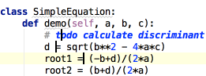

In &productName;, you can have multiple cursors. Having pressed Alt, click the left mouse button at the desired position to set additional cursors in the editor.
Press &shortcut:EditorEscape; to remove all the additional cursors but one that resides at the line at caret.
